무료 명조 폰트 53종
메인 화면에서 이 목록 보기 →내 문장으로 미리보기·비교·필터를 함께 쓸 수 있습니다
책 본문·잡지·격식 있는 제목에 어울리는 명조(바탕) 계열 상업용 무료 한글 폰트입니다. 긴 본문에는 획 대비가 너무 크지 않은 명조가 읽기 편하고, 전자책에 넣으려면 사용 범위 표의 '임베딩'을 확인하세요.
라이선스 원문 대조 · 다운로드는 원 배포처로 연결 · 목록 갱신 2026-11-12 · 견본 이미지를 누르면 상세 정보와 내 문장 미리보기로 갑니다.
 본명조명조 · 굵기 6종 · 한글 11,172자한자 미확인OFL · 인쇄·웹·영상·BI/CI 가능
본명조명조 · 굵기 6종 · 한글 11,172자한자 미확인OFL · 인쇄·웹·영상·BI/CI 가능 나눔명조명조 · 굵기 3종 · 한글 11,172자한자 미확인OFL · 인쇄·웹·영상·BI/CI 가능
나눔명조명조 · 굵기 3종 · 한글 11,172자한자 미확인OFL · 인쇄·웹·영상·BI/CI 가능 고운바탕명조 · 굵기 2종 · 한글 11,172자한자 미확인OFL · 인쇄·웹·영상·BI/CI 가능
고운바탕명조 · 굵기 2종 · 한글 11,172자한자 미확인OFL · 인쇄·웹·영상·BI/CI 가능 함렛명조 · 굵기 9종 · 한글 11,172자한자 미확인OFL · 인쇄·웹·영상·BI/CI 가능
함렛명조 · 굵기 9종 · 한글 11,172자한자 미확인OFL · 인쇄·웹·영상·BI/CI 가능 마루부리명조 · 굵기 5종 · 한글 11,172자한자 지원 제한OFL · 인쇄·웹·영상·BI/CI 가능
마루부리명조 · 굵기 5종 · 한글 11,172자한자 지원 제한OFL · 인쇄·웹·영상·BI/CI 가능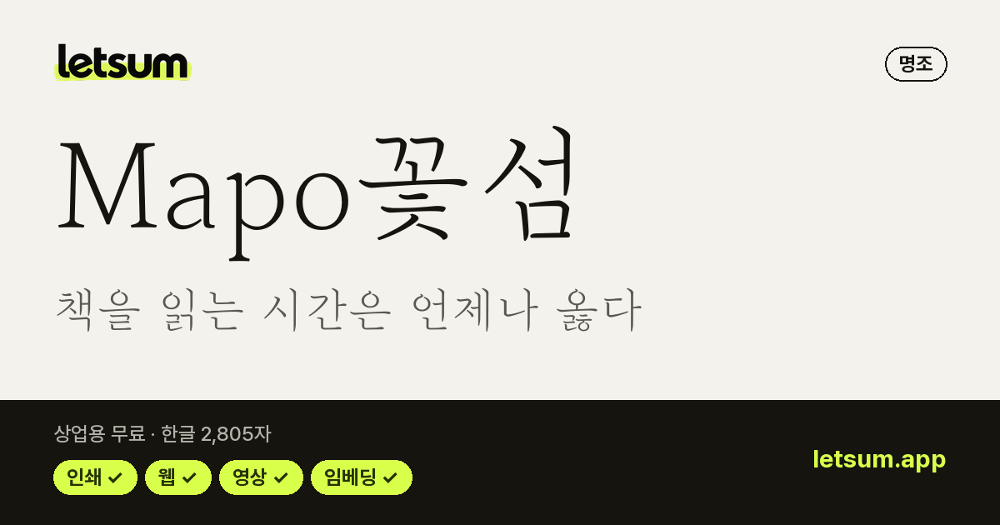
Mapo꽃섬명조 · 굵기 1종 · 한글 2,805자한자 지원 제한공공누리 1유형 · 인쇄·웹·영상·BI/CI 가능 송명명조 · 굵기 1종 · 한글 11,172자한자 미확인OFL · 인쇄·웹·영상·BI/CI 가능
송명명조 · 굵기 1종 · 한글 11,172자한자 미확인OFL · 인쇄·웹·영상·BI/CI 가능 Kopub World 바탕체명조 · 굵기 3종 · 한글 11,172자한자 지원공공누리 1유형 · 인쇄·웹·영상·BI/CI 가능
Kopub World 바탕체명조 · 굵기 3종 · 한글 11,172자한자 지원공공누리 1유형 · 인쇄·웹·영상·BI/CI 가능 디필리아명조 · 굵기 1종 · 한글 11,172자한자 미확인OFL · 인쇄·웹·영상·BI/CI 가능
디필리아명조 · 굵기 1종 · 한글 11,172자한자 미확인OFL · 인쇄·웹·영상·BI/CI 가능 부산단디명조명조 · 굵기 3종 · 한글 11,172자한자 지원 제한부산시 무료 이용 · 인쇄·웹·영상 가능
부산단디명조명조 · 굵기 3종 · 한글 11,172자한자 지원 제한부산시 무료 이용 · 인쇄·웹·영상 가능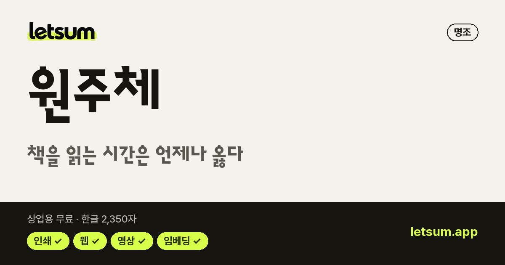
원주체명조 · 굵기 2종 · 한글 2,350자한자 지원 제한OFL · 인쇄·웹·영상·BI/CI 가능 이롭게 바탕체명조 · 굵기 1종 · 한글 11,172자한자 지원 제한OFL · 인쇄·웹·영상·BI/CI 가능
이롭게 바탕체명조 · 굵기 1종 · 한글 11,172자한자 지원 제한OFL · 인쇄·웹·영상·BI/CI 가능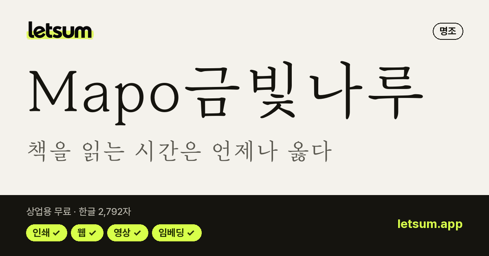
Mapo금빛나루명조 · 굵기 1종 · 한글 2,792자한자 지원 제한공공누리 1유형 · 인쇄·웹·영상·BI/CI 가능 그랜디플로라 원명조 · 굵기 1종 · 한글 11,172자한자 미확인OFL · 인쇄·웹·영상·BI/CI 가능
그랜디플로라 원명조 · 굵기 1종 · 한글 11,172자한자 미확인OFL · 인쇄·웹·영상·BI/CI 가능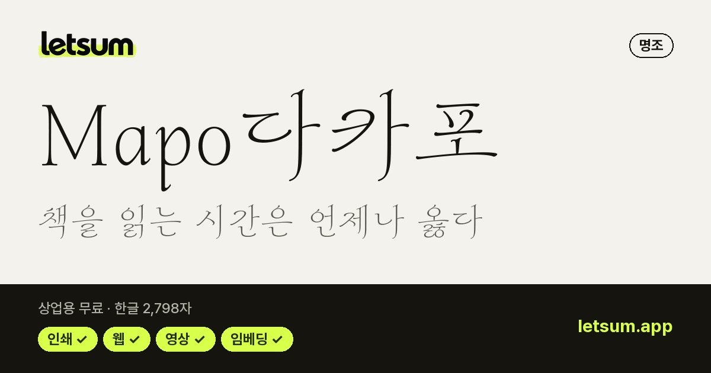
Mapo다카포명조 · 굵기 1종 · 한글 2,798자한자 지원 제한 · 감성 캘리그라피공공누리 1유형 · 인쇄·웹·영상·BI/CI 가능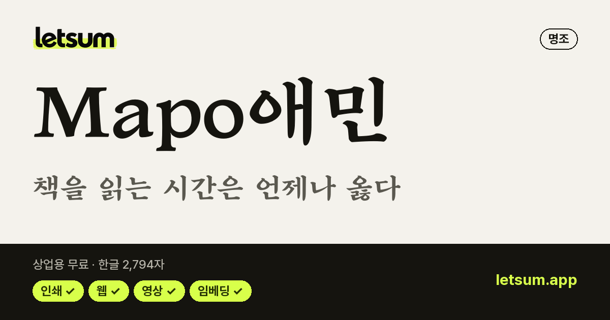
Mapo애민명조 · 굵기 1종 · 한글 2,794자한자 지원 제한 · 감성 캘리그라피공공누리 1유형 · 인쇄·웹·영상·BI/CI 가능 나눔명조 에코명조 · 굵기 3종 · 한글 11,172자한자 지원 제한OFL · 인쇄·웹·영상·BI/CI 가능
나눔명조 에코명조 · 굵기 3종 · 한글 11,172자한자 지원 제한OFL · 인쇄·웹·영상·BI/CI 가능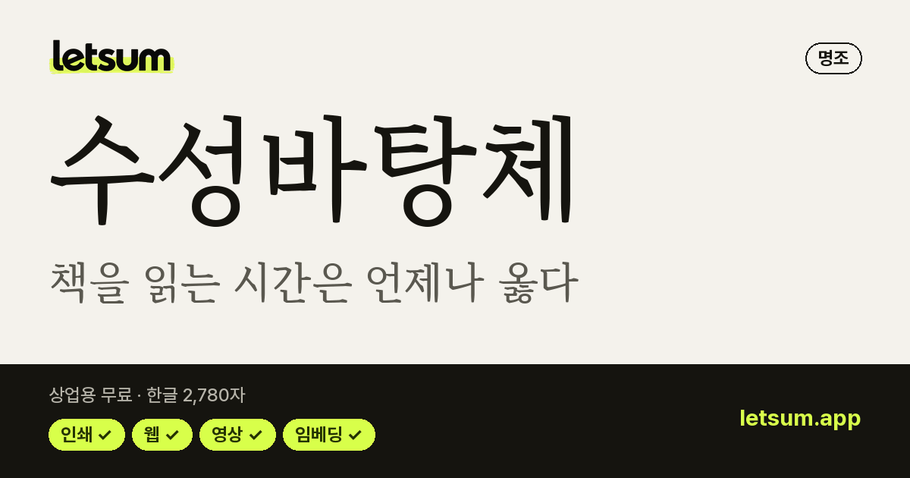
수성바탕체명조 · 굵기 1종 · 한글 2,780자한자 지원 제한공공누리 1유형 · 인쇄·웹·영상·BI/CI 가능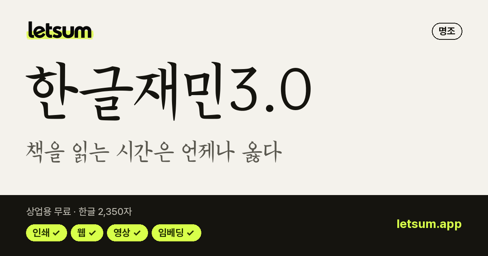
한글재민3.0명조 · 굵기 1종 · 한글 2,350자한자 지원 · 감성 캘리그라피OFL · 인쇄·웹·영상·BI/CI 가능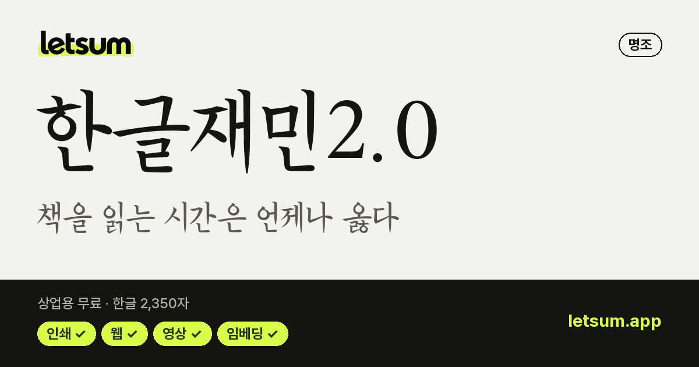
한글재민2.0명조 · 굵기 1종 · 한글 2,350자한자 지원OFL · 인쇄·웹·영상·BI/CI 가능 경기천년바탕명조 · 굵기 2종 · 한글 11,172자한자 지원공공누리 1유형 · 인쇄·웹·영상·BI/CI 가능
경기천년바탕명조 · 굵기 2종 · 한글 11,172자한자 지원공공누리 1유형 · 인쇄·웹·영상·BI/CI 가능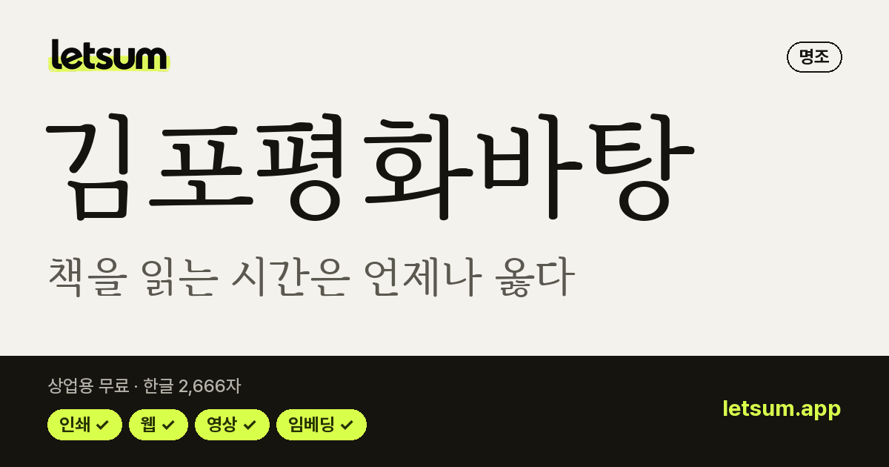
김포평화바탕명조 · 굵기 1종 · 한글 2,666자한자 지원 제한공공누리 1유형 · 인쇄·웹·영상·BI/CI 가능 리디바탕명조 · 굵기 1종 · 한글 11,172자한자 지원 제한OFL · 인쇄·웹·영상·BI/CI 가능
리디바탕명조 · 굵기 1종 · 한글 11,172자한자 지원 제한OFL · 인쇄·웹·영상·BI/CI 가능 서초바탕명조 · 굵기 1종 · 한글 11,172자한자 지원OFL · 인쇄·웹·영상·BI/CI 가능
서초바탕명조 · 굵기 1종 · 한글 11,172자한자 지원OFL · 인쇄·웹·영상·BI/CI 가능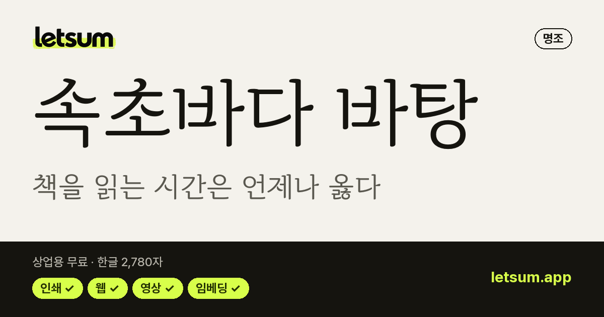
속초바다 바탕명조 · 굵기 1종 · 한글 2,780자한자 지원 제한공공누리 1유형 · 인쇄·웹·영상·BI/CI 가능 예스 명조명조 · 굵기 2종 · 한글 11,172자한자 지원예스24 무료 이용 · 인쇄·웹·영상 가능
예스 명조명조 · 굵기 2종 · 한글 11,172자한자 지원예스24 무료 이용 · 인쇄·웹·영상 가능 우아한세리프명조 · 굵기 2종 · 한글 11,172자한자 지원 제한OFL · 인쇄·웹·영상·BI/CI 가능
우아한세리프명조 · 굵기 2종 · 한글 11,172자한자 지원 제한OFL · 인쇄·웹·영상·BI/CI 가능 정독명조 · 굵기 2종 · 한글 11,172자한자 지원 제한OFL · 인쇄·웹·영상·BI/CI 가능
정독명조 · 굵기 2종 · 한글 11,172자한자 지원 제한OFL · 인쇄·웹·영상·BI/CI 가능 정독 Display명조 · 굵기 2종 · 한글 11,172자한자 지원 제한OFL · 인쇄·웹·영상·BI/CI 가능
정독 Display명조 · 굵기 2종 · 한글 11,172자한자 지원 제한OFL · 인쇄·웹·영상·BI/CI 가능 조선100년체명조 · 굵기 1종 · 한글 11,172자한자 지원 제한조선일보 무료 이용 · 인쇄·웹·영상·BI/CI 가능
조선100년체명조 · 굵기 1종 · 한글 11,172자한자 지원 제한조선일보 무료 이용 · 인쇄·웹·영상·BI/CI 가능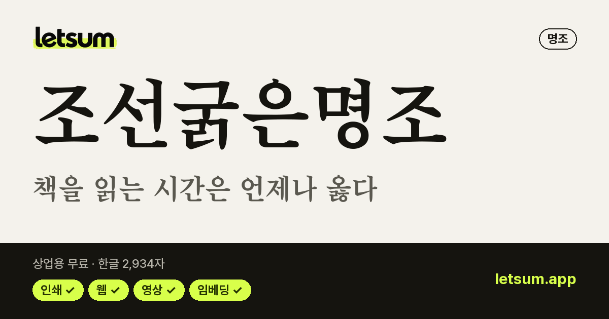
조선굵은명조명조 · 굵기 1종 · 한글 2,934자한자 지원조선일보 무료 이용 · 인쇄·웹·영상·BI/CI 가능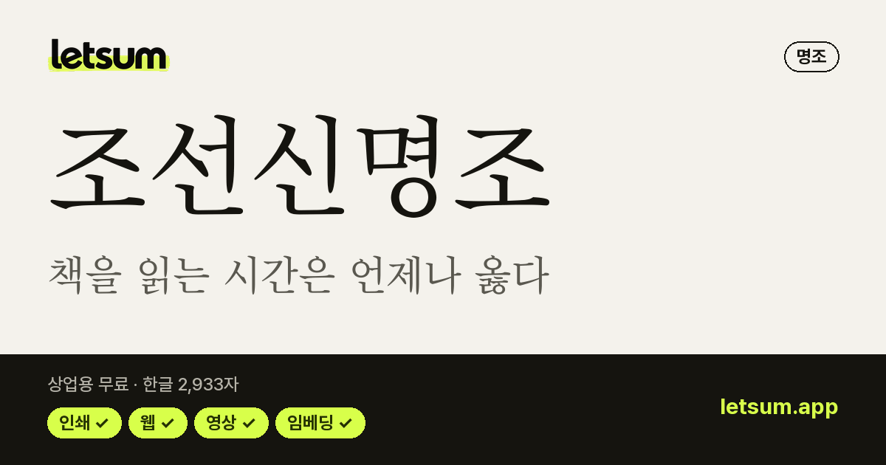
조선신명조명조 · 굵기 1종 · 한글 2,933자한자 지원조선일보 무료 이용 · 인쇄·웹·영상·BI/CI 가능조선일보명조조선일보명조명조 · 굵기 1종 · 한글 11,172자한자 지원조선일보 무료 이용 · 인쇄·웹·영상·BI/CI 가능 하다 바탕명조 · 굵기 1종 · 한글 11,172자한자 지원 제한OFL · 인쇄·웹·영상·BI/CI 가능
하다 바탕명조 · 굵기 1종 · 한글 11,172자한자 지원 제한OFL · 인쇄·웹·영상·BI/CI 가능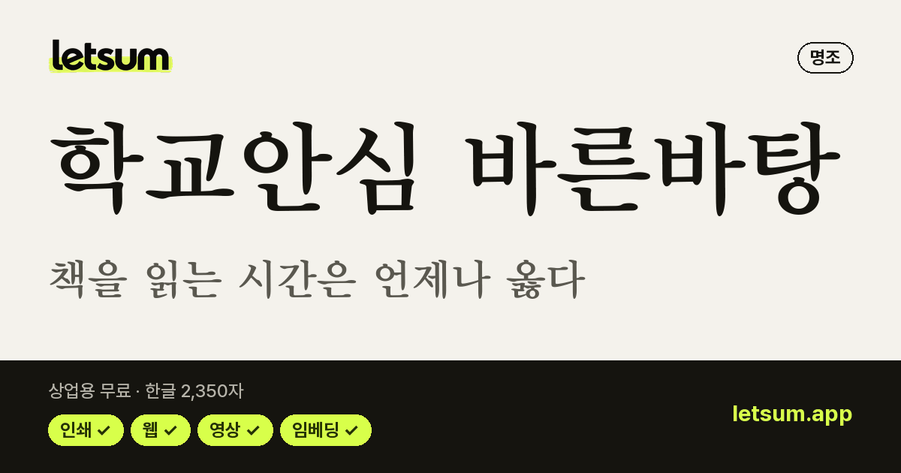
학교안심 바른바탕명조 · 굵기 2종 · 한글 2,350자한자 지원 제한OFL · 인쇄·웹·영상·BI/CI 가능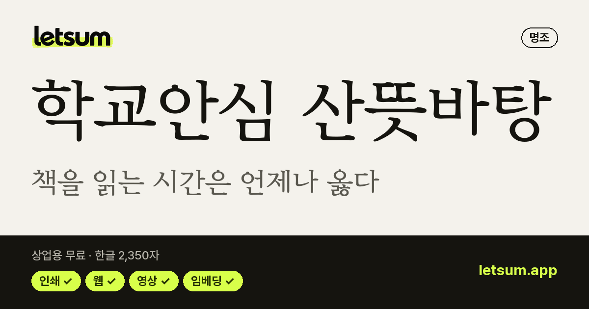
학교안심 산뜻바탕명조 · 굵기 2종 · 한글 2,350자한자 지원 제한OFL · 인쇄·웹·영상·BI/CI 가능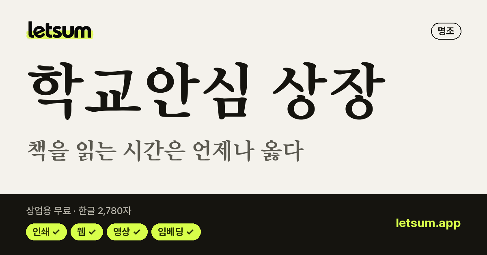
학교안심 상장명조 · 굵기 1종 · 한글 2,780자한자 지원 제한OFL · 인쇄·웹·영상·BI/CI 가능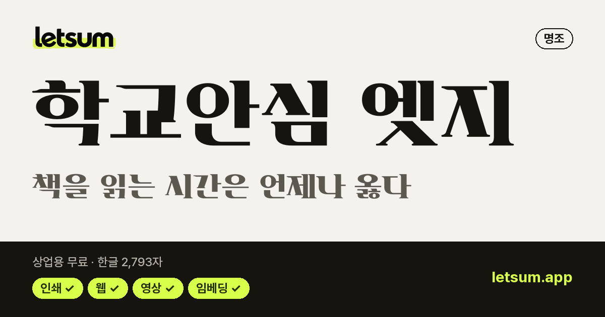
학교안심 엣지명조 · 굵기 1종 · 한글 2,793자한자 지원 제한OFL · 인쇄·웹·영상·BI/CI 가능HS활공명조HS활공명조명조 · 굵기 1종 · 한글 2,781자한자 지원 제한OFL · 인쇄·웹·영상·BI/CI 가능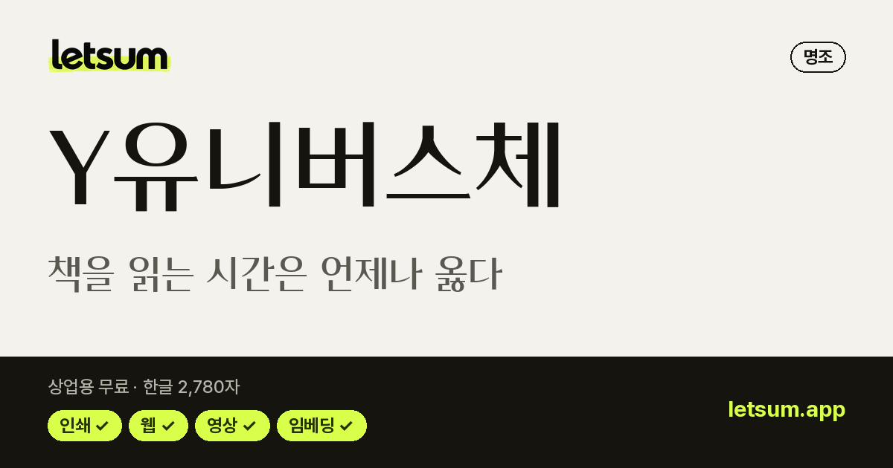
Y유니버스체명조 · 굵기 2종 · 한글 2,780자한자 지원 제한KT Y 무료 이용 · 인쇄·웹·영상 가능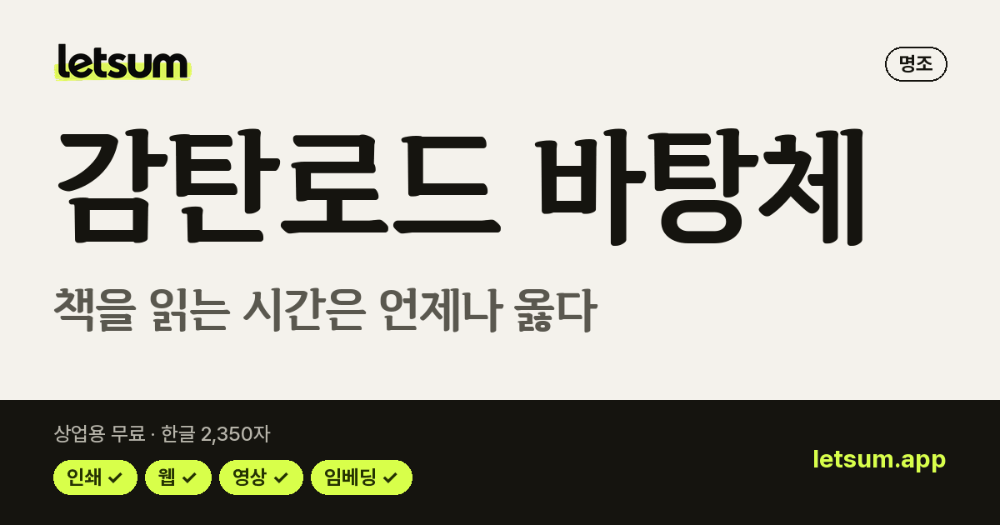
감탄로드 바탕체명조 · 굵기 3종 · 한글 2,350자한자 지원 제한공공누리 1유형 · 인쇄·웹·영상·BI/CI 가능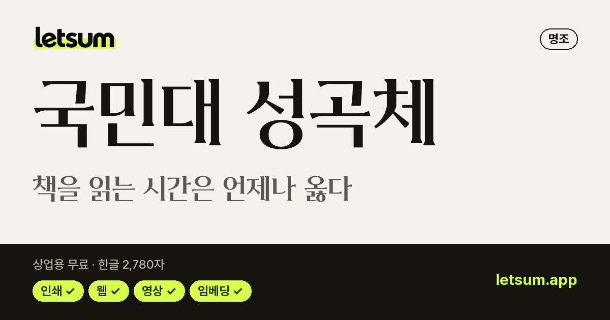
국민대 성곡체명조 · 굵기 1종 · 한글 2,780자한자 지원 제한출처 표시·변경 금지 · 인쇄·웹·영상·BI/CI 가능 김정철_명조체명조 · 굵기 3종 · 한글 11,172자한자 지원 제한OFL · 인쇄·웹·영상·BI/CI 가능
김정철_명조체명조 · 굵기 3종 · 한글 11,172자한자 지원 제한OFL · 인쇄·웹·영상·BI/CI 가능 나눔명조 옛한글명조 · 굵기 1종 · 한글 11,172자한자 지원OFL · 인쇄·웹·영상·BI/CI 가능북엔드 바탕북엔드 바탕명조 · 굵기 2종 · 공식 안내: 한글 2,350자한자 미확인북엔드 무료 이용 · 인쇄·웹·영상·BI/CI 가능
나눔명조 옛한글명조 · 굵기 1종 · 한글 11,172자한자 지원OFL · 인쇄·웹·영상·BI/CI 가능북엔드 바탕북엔드 바탕명조 · 굵기 2종 · 공식 안내: 한글 2,350자한자 미확인북엔드 무료 이용 · 인쇄·웹·영상·BI/CI 가능 순바탕체명조 · 굵기 3종 · 한글 11,172자한자 지원 제한공공누리 1유형 · 인쇄·웹·영상·BI/CI 가능을유1945을유1945명조 · 굵기 2종 · 공식 배포처 확인한자 미확인무료 이용 · 인쇄·웹·영상·BI/CI 가능
순바탕체명조 · 굵기 3종 · 한글 11,172자한자 지원 제한공공누리 1유형 · 인쇄·웹·영상·BI/CI 가능을유1945을유1945명조 · 굵기 2종 · 공식 배포처 확인한자 미확인무료 이용 · 인쇄·웹·영상·BI/CI 가능 전주완판본체 각명조 · 굵기 3종 · 한글 11,172자한자 지원 제한 · 전통 서예·궁서공공누리 1유형 · 인쇄·웹·영상·BI/CI 가능
전주완판본체 각명조 · 굵기 3종 · 한글 11,172자한자 지원 제한 · 전통 서예·궁서공공누리 1유형 · 인쇄·웹·영상·BI/CI 가능 전주완판본체 순명조 · 굵기 3종 · 한글 11,172자한자 지원 제한 · 전통 서예·궁서공공누리 1유형 · 인쇄·웹·영상·BI/CI 가능
전주완판본체 순명조 · 굵기 3종 · 한글 11,172자한자 지원 제한 · 전통 서예·궁서공공누리 1유형 · 인쇄·웹·영상·BI/CI 가능 제주명조체명조 · 굵기 1종 · 한글 11,172자한자 지원 제한공공누리 1유형 · 인쇄·웹·영상·BI/CI 가능
제주명조체명조 · 굵기 1종 · 한글 11,172자한자 지원 제한공공누리 1유형 · 인쇄·웹·영상·BI/CI 가능 백묵 바탕명조 · 굵기 1종 · 한글 11,172자한자 지원백묵 자유이용·고지 유지 · 인쇄·웹·영상·BI/CI 가능
백묵 바탕명조 · 굵기 1종 · 한글 11,172자한자 지원백묵 자유이용·고지 유지 · 인쇄·웹·영상·BI/CI 가능 여백명조 · 굵기 2종 · 한글 11,172자한자 지원 제한OFL · 고지·예약 이름 조건 · 인쇄·웹·영상·BI/CI 가능
여백명조 · 굵기 2종 · 한글 11,172자한자 지원 제한OFL · 고지·예약 이름 조건 · 인쇄·웹·영상·BI/CI 가능 JetBatang NF명조 · 굵기 8종 · 한글 11,172자한자 지원 제한OFL · 고지·예약 이름 조건 · 인쇄·웹·영상·BI/CI 가능
JetBatang NF명조 · 굵기 8종 · 한글 11,172자한자 지원 제한OFL · 고지·예약 이름 조건 · 인쇄·웹·영상·BI/CI 가능자주 묻는 질문
2,350자 폰트와 11,172자 폰트는 무엇이 다른가요?
현대 한글로 만들 수 있는 글자는 11,172자입니다. 2,350자 폰트는 자주 쓰는 글자만 있어 '뷁·똠·햏' 같은 드문 글자가 빠집니다. 이름·외래어가 많은 글에는 11,172자 폰트가 안전합니다.
'무료 폰트'면 상업적으로 써도 되나요?
아닙니다. 개인 용도만 무료인 폰트도 많고, 상업용 무료라도 로고(BI/CI)·영상·웹폰트 임베딩·포장지 사용은 따로 막아 둔 경우가 있습니다. LETSUM은 폰트마다 라이선스 원문을 대조해 항목별 사용 범위를 표로 보여 줍니다.
무료 폰트를 다운로드한 뒤 어떻게 적용하나요?
받은 압축(zip) 파일을 풀고, 폰트 파일(.ttf·.otf)을 윈도우는 오른쪽 클릭 → '모든 사용자용으로 설치', 맥은 더블클릭 → '서체 설치'로 설치합니다. 쓰던 프로그램(파워포인트·포토샵 등)을 껐다 켜면 글꼴 목록에 나타납니다.
다른 무료 폰트 목록
상업용 무료 한글 폰트 1163무료 고딕 폰트 195무료 손글씨 폰트 749귀여운 폰트 90예쁜 감성 폰트 225제목용 폰트 166레트로·픽셀 폰트 31캘리그라피·붓글씨 폰트 48전통 서예·궁서 14감성 캘리그라피 25강한 붓글씨·제목용 9유튜브 썸네일 폰트 211PPT 폰트 90로고 폰트 1089무료 한글 웹폰트 110311,172자 지원 폰트 877한자 지원 폰트 55옛한글 지원 폰트 4OFL 한글 폰트 393공공누리 무료 폰트 123코딩 폰트 35무료 영문 폰트 775딩벳·아이콘 폰트 48산세리프 영문 폰트 308세리프 영문 폰트 157영문 필기체·손글씨 폰트 103영문 제목·로고 폰트 175영문 코딩 폰트 32가변 영문 폰트 238다국어 지원 영문 폰트 368무료 아이콘 폰트 29바코드 폰트 7이모지·기호 폰트 5시안·데이터 표현 폰트 7
※ 사용 범위는 참고용이며, 정확한 범위는 이용 전 저작권자의 원문 라이선스로 확인하세요. 모든 폰트의 저작권은 각 저작권자에게 있습니다.